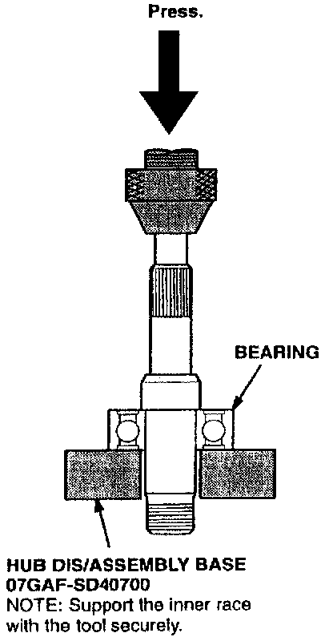
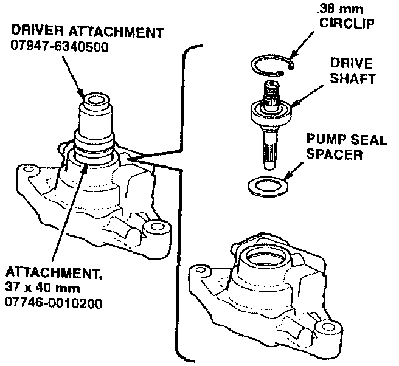
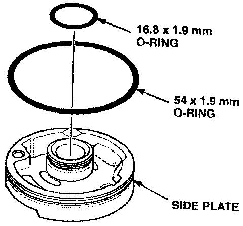
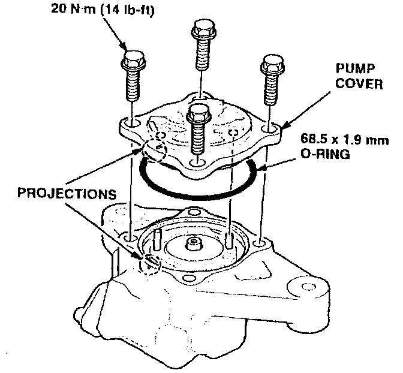
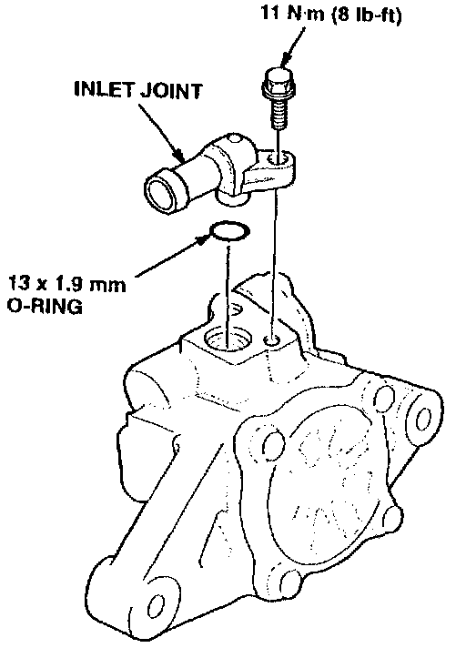
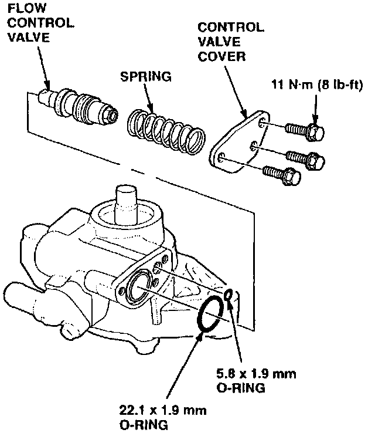

Corrective Action
Replace the power steering pump shaft and seal with the parts listed under PARTS INFORMATION.NOTE:
When repairing a 2.5TL, use the disassembly reassembly procedure in section 17 of the Integra service manual.
1. Remove the power steering pump from the car.
2. Disassemble the power steering pump.

3. Press the bearing off the old power steering pump shaft, then press it onto the new shaft.
4. Coat the lip of the new oil seal with grease (see REQUIRED MATERIALS), then install it in the pump housing.

5. Install the new shaft in the pump housing with the spacer and circlip.

6. Coat the new O-rings with power steering fluid (see REQUIRED MATERIALS), then install them on the side plate.
7. Install the side plate.
8. Install the rotor and vanes. Install the pump cam ring.

9. Coat the new O-ring with power steering fluid, then install it on the pump cover. Install the pump cover on the housing.

10. Coat the new O-ring with power steering fluid, then install the inlet joint on the pump housing.
11. Coat the flow control valve with power steering fluid.

12. Coat the new O-rings with grease, then install the flow control valve.
13. Install the pulley. Torque the nut to 64 N.m (47 lb-ft)
14. Reinstall the power steering pump on the car.
15. Check the fluid level in the system; add fluid if necessary.
16. Bleed any air from the system, then recheck the fluid level.
17. Integra only: Clean the oil off the underside of the hood with a clean shop towel and degreaser (see REQUIRED MATERIALS).